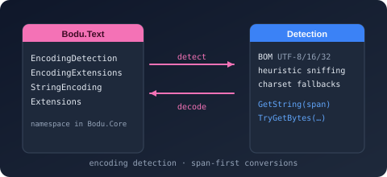

Namespace Bodu.Text

Bodu.Text
Purpose
The Bodu.Text namespace ships inside the Bodu.Core package — it is not a separate library. It holds allocation-conscious helpers for the BCL Encoding itself: zero-ceremony string↔byte[] conversion, pooled / owned-memory surfaces, byte-order-mark (BOM / preamble) handling, UTF classification, fallback configuration, and chunked transcoding.
It is also the namespace root that the separately packaged text libraries extend: the binary-to-text radix encodings in Bodu.Text.Encoding, the include/exclude pattern filtering in Bodu.Text.Filtering, and the line-format libraries Bodu.Text.Delimited, Bodu.Text.DotEnv, and Bodu.Text.Ini (see the line-formats introduction). None of those types live in this namespace; only the three encoding helpers below do.
Static documentation
- Encoding helpers and BOM detection — the
System.Text.Encodingconvenience surface. - Bodu.Text.Formats overview — the document-format codecs and their shared pipeline.
Key types
System.Text.Encoding helpers
- StringEncodingExtensions — extension methods on
string(UTF-8 fast paths, pooled / preamble-aware conversion). - EncodingExtensions — extension methods on
System.Text.Encoding(preamble handling, UTF / ASCII classification, fallback configuration, rented / owned / pooled buffer conversion), onEncoder/Decoder(chunkedEncodeChunk/DecodeChunktranscoding), and onReadOnlySpan<char>/ReadOnlySpan<byte>(ToBytes,ToChars,DecodeToString,Transcode, buffer-size guards). - EncodingDetection — static BOM-sniffing:
TryDetectByPreamble(ReadOnlySpan<byte>, out Encoding?).
Example
using System.Text;
using Bodu.Text;
// Sniff a byte-order mark, then decode without the preamble bytes leaking into the text.
byte[] bytes = File.ReadAllBytes(path);
Encoding encoding = EncodingDetection.TryDetectByPreamble(bytes, out Encoding? detected)
? detected
: Encoding.UTF8;
string text = encoding.GetStringSkippingPreamble(bytes);
// String → bytes without the Encoding ceremony.
byte[] utf8 = "héllo".ToUtf8Bytes();
byte[] latin1 = "héllo".ToBytes(Encoding.Latin1);
int byteCount = "héllo".GetUtf8ByteCount();
Notes
- No extra package. These helpers arrive with
Bodu.Core; the radix codecs (Base16…Base85) are the separateBodu.Text.Encodingpackage. - Span-first. Every conversion has a span,
IBufferWriter<byte>, or pooled-buffer overload, so the common cases avoid intermediate allocations. - See also: the encoding helpers guide, the Bodu.Text introduction, and the Bodu.Core introduction.
Namespaces
Classes
- EncodingDetection
Provides byte-order-mark (BOM) based heuristics for detecting which Encoding was used to produce a byte sequence.
- EncodingExtensions
Provides span-friendly, allocation-aware, and pool-aware extension methods on Encoding, ReadOnlySpan<T> of char and byte, and on Encoder / Decoder.
- StringEncodingExtensions
Provides encoding extension methods on string that mirror the span-receiver surface in EncodingExtensions.